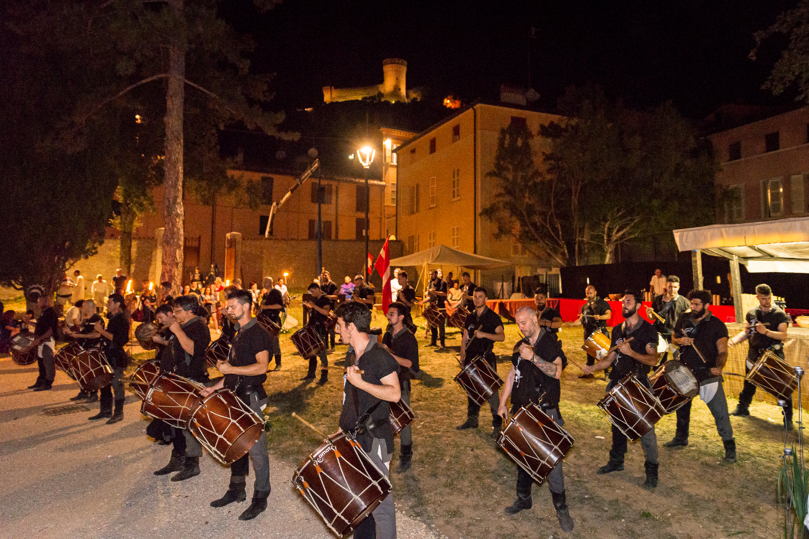
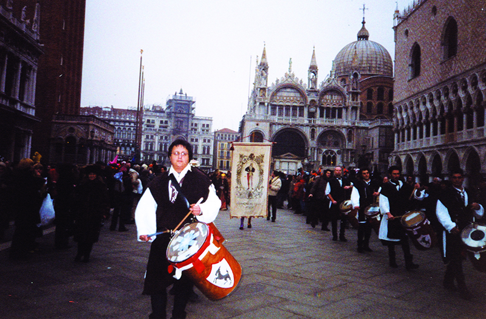
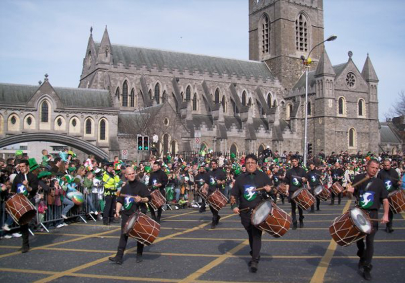
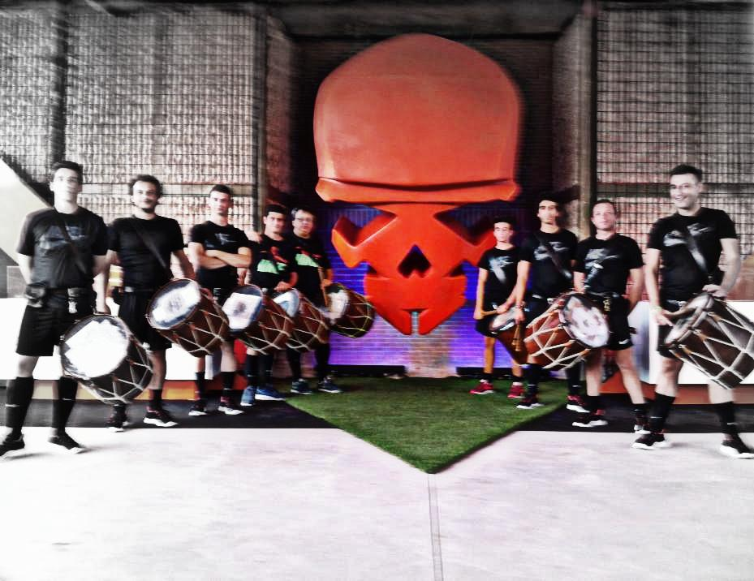
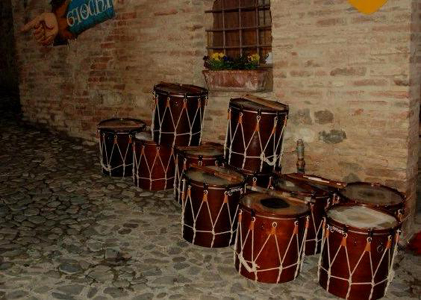

Nel panorama nazionale delle compagnie storiche si distingue l’Associazione Culturale Tamburi Medioevale di Brisighella. Artefice di un genere esclusivo è composta da ragazzi virtuosi del ritmo e delle percussioni.
Artisticamente è nata nel 1984 in seguito a una esperienza di attività integrativa nell’ambito delle scuole elementari. Da allora non si è più sciolta. Ben presto fu inserita nei programmi delle celebri Feste Medioevali, dove, in circa trent’anni di rappresentazioni è sempre stato presente. La stessa rassegna brisighellese lo vede ancora oggi protagonista in qualità di gruppo storico ufficiale. Le loro performance si avvalgono del più grande tamburo a tracolla esistente denominato timpano.

Con tale strumento producono un suono cupo, forte, violento e rumoroso, tipico dei ritmi in auge nei secoli bui della storia. Nel medioevo infatti con l’utilizzo del solo tamburo non si ricercava la melodia del suono, ma si doveva prevalentemente richiamare l’attenzione in modo inequivocabile. In particolare le rullate dei tamburi segnalavano le adunate ai tornei cavallereschi o l’inizio di avvenimenti importaniti quali una battaglia, cerimonie funebri e persino esecuzioni capitali. Le impetuose percussioni espresse dal drappello di tamburieri si rivelano per il pubblico di grande suggestività ed emotività. Sono dotati di una esperienza pluriennale e di una tecnica raffinata raggiunta grazie a studi, ricerche musicali e storiche. Le loro esibizioni si collocano in coreografie e accompagnamenti di cortei storici, rievocazioni, palii, feste in costume. La loro partecipazione ha contribuito a arricchire e valorizzare culturalmente numerose manifestazioni in tutta Italia.

Costumi
Durante questi anni, il gruppo, si è sviluppato sia in termini tecnici e strumentali, sia in vesti e costumi.
Gesta
Si annoverano numerose partecipazioni a sfilate storiche nelle città di: Ravenna, Milano, Cesena, San Marino, Medicina, Saronno, Calenzano, Marradi, Faenza, Casalecchio di Reno, Salsomaggiore, Mirano, Monteveglio, Castiglione delle Stiviere, Russi, etc….
Fra le più importanti ricordiamo:
Feste Medioevali – Brisighella
Palio di San Donato – Cividale
Ferie Medioevali – Pavone Canavese
Giornate Medioevali – San Marino
Uva e Dintorni – Avio
Comun Comunale – Rovereto
Feste Virgiliane – Trento
Storico Carnevale di Ivrea
Perdonanza – L’Aquila
Palio delle Cerchie – Finale Emilia
Feste Rinascimentali – Mirandola
Celebrazioni della Certosa – Pavia
Notte di Fiaba – Riva del Garda
Corteo Storico della Val di Gresta – Mori
La Bolla – Cavareno
Palio dei Somari – Alfero
Alla Corte dei Suardo – Bianzano

Da evidenziare la partecipazione al St. Patrick Festival 2009 a Dublino, la partecipazione al Carnevale di Patrasso 2008 (Grecia) e la partecipazione al Nike Hypervenom Knockout a Roma l’11 settembre 2013.

In TV il gruppo è intervenuto a trasmissioni come “Uno Mattina”, “Mezzogiorno in Famiglia”, “Tutti a Tavola”, “Linea Verde”, “La Domenica del Villaggio”, oltre a diverse apparizioni in servizi telegiornalistici.
Varie testate della carta stampata hanno dedicato al gruppo ampi spazi.
Il Tamburo
Le testimonianze antiche concordemente affermano l’origine orientale di questo strumento destinato a segnare il ritmo delle danze e dei canti per lo più religiosi. Tale strumento venne introdotto in Europa dai Saraceni durante l’invasione della Spagna. Il nome deriva dall arabo “tambur” che a sua volta prende origine dal persiano “danbara”. Nell’esercito francese i tamburieri apparvero verso la metà del secolo XIV e sostituirono quasi generalmente le trombe. La sua presenza sul campo di battaglia andò però sempre diminuendo e si limitò piuttosto ad apparire nelle esibizioni di cerimonie solenni e di parate.

Trailer
In questa sezione si possono trovare le produzioni ed i cortometraggi creati dal gruppo